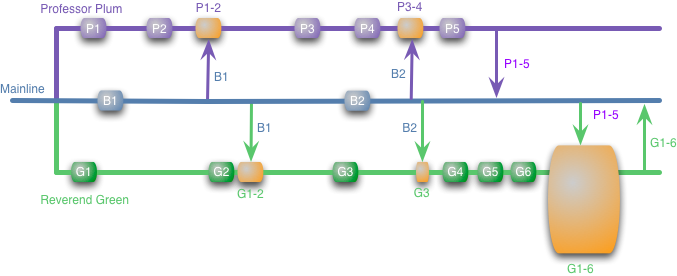
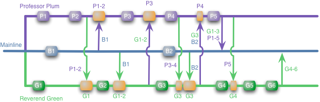

| FeatureBranch | design | 3 September 2009 | Reactions |
|
With the rise of Distributed Version Control Systems (DVCS) such as git and Mercurial, I've seen more conversations about strategies for branching and merging and how they fit in with Continuous Integration (CI). There's a bit of confusion here, particularly on the practice of feature branching and how it fits in with CI. Simple (isolated) Feature BranchThe basic idea of a feature branch is that when you start work on a feature (or story if you prefer that term) you take a branch of the repository to work on that feature. In a DVCS, you'll do this in your personal repository, but the same kind of thing works in a centralized VCS too. I'm going to illustrate this with a series of diagrams. I have a shared project mainline, colored blue, and two developers, colored purple and green (since the developers names are Reverend Green and Professor Plum).  I'm using labeled colored boxes (eg P1 and P2) to represent local commits on the branch. Arrows between branches represent merges between branches, the boxes are colored orange to make them stand out. In this case there are updates, say a couple of bug-fixes, applied to the mainline (presumably by Mrs Peacock). When these happen our developers merge them into their work. To give this a sense of time, I'll assume we're looking at a few days work here, with each developer committing to their local branch roughly once a day. In order to ensure things are working properly, they can run builds and tests on their branch. Indeed for this article I'll assume that each commit and merge comes with an automated build and test on the branch it's on. The advantage of feature branching is that each developer can work on their own feature and be isolated from changes going on elsewhere. They can pull in changes from the mainline at their own pace, ensuring they don't break the flow of their feature. Furthermore it allows the team to choose its features for release. If Reverend Green takes too long, we can release with just Professor Plum's changes. Or we may want to delay Professor Plum's feature, perhaps because we are uncertain that the feature works the way we want to release it. In this case we just tell the professor to not merge his changes into mainline until we are ready for the feature. This is called cherry-picking, the team decides which features to merge in before release. Attractive though that picture looks, there can be trouble ahead. Although our developers can develop their features in isolation, at some point their work does have to be integrated. In this case Professor Plum easily updates the mainline with his own changes. There's no merge here because he's already incorporated the mainline changes into his own branch (there will be a build). Things are however not so simple for Reverend Green, he needs to merge all of his changes (G1-6) with all of Professor Plum's (P1-5). (At this point many users of DVCSs may feel I'm missing something as this is a simple, perhaps simplistic view of feature branching. I'll get to a more involved scheme later.) I've made this a big merge box as it's a scary merge. It may be just fine, the developers may have been working on completely separate parts of the code base with no interaction, in which case the merge will go smoothly. But they may be working on bits that do interact, in which case here lye dragons. The dragons can come in many forms, and tooling can help slay some of them. The most of obvious dragon is the complexity of merging the source code and dealing with conflicts as developers edit the same files. Modern DVCSs actually handle this rather well, indeed somewhat magically. Git has quite the reputation for dealing with complicated merges. So much so that the textual issues of merging are much better than they used to be - indeed I'll go so far as to discount textual conflicts for the purposes of this article. The problem I worry more about is a semantic conflict. A simple example of this is that if Professor Plum changes the name of a method that Reverend Green's code calls. Refactoring tools allow you to rename a method safely, but only on your code base. So if G1-6 contain new code that calls foo, Professor Plum can't tell in his code base as he doesn't have it. You only find out on the big merge. A function rename is a relatively obvious case of a semantic conflict. In practice they can be much more subtle. Tests are the key to discovering them, but the more code there is to merge the more likely you'll have conflicts and the harder it is to fix them. It's the risk of conflicts, particularly semantic conflicts, that make big merges scary. This fear of big merges also acts as a deterrent to refactoring. Keeping code clean is constant effort, to do it well it requires everyone to keep an eye out for cruft and fix it wherever they see it. However this kind of refactoring on a feature branch is awkward because it makes the Big Scary Merge worse. The result we see is that teams using feature branches shy away from refactoring which leads to uglier code bases. Continuous IntegrationIt's these problems that Continuous Integration was designed to solve. With Continuous Integration my diagram looks like this.  There's a lot more merging going on here, but merging is one of those things that's much easier to do frequently and small rather than rarely and large. As a result if Professor Plum is changing some code that Reverend Green relies on, the Reverend will find it early, such as when he merges in P1-2. At that point he's only got to modify G1-2 to work with the changes, rather than G1-6. CI is effective at removing the problem of big merges, but it's also a vital communication mechanism. In this scenario the potential conflict will actually appear when Professor Plum merges G1 and realizes that Reverend Green is actively building on Plum's libraries. At this point Professor Plum can go and find Reverend Green and they can discuss how their two features interact. It may be that Professor Plum's feature requires some changes that don't mesh well with Reverend Green's changes. By looking at both their features they can come up with a better design that affects both their work-streams. With the isolated feature branches our developers don't discover this till late, probably too late to do much about it. Communication is one of the key factors in software development and one of CI's most important features is that it facilitates human communication. It's important to note that, most of the time, feature branching like this is a different approach to CI. One of the principles of CI is that everyone commits to the mainline every day. So unless feature branches only last less than a day, running a feature branch is a different animal to CI. I've heard people say they are doing CI because they are running builds, perhaps using a CI server, on every branch with every commit. That's continuous building, and a Good Thing, but there's no integration, so it's not CI. Promiscuous IntegrationEarlier I said parenthetically that there are other ways of doing feature branching. Say Professor Plum and Reverend Green take tea together early in the cycle. While chatting they discover they are working on features that interact. At this point they may choose to integrate with each other directly, like this. With this approach they only push to the mainline at the end, as before. But they merge frequently with each other, so this avoids the Big Scary Merge. The point here is that the primary issue with the isolated feature branching scheme is its isolation. When you isolate the feature branches, there is a risk of a nasty conflict growing without you realizing it. Then the isolation is an illusion, and will be shattered painfully sooner or later. So is this more ad-hoc integration a form of CI or a different animal entirely? I think it is a different animal, again a key point of CI is everyone integrates to the mainline every day. Integrating across feature branches, which I shall call promiscuous integration (PI), doesn't involve or even need a mainline. I think this difference is important. I see CI as primarily giving birth to a release candidate at each commit. The job of the CI system and deployment process is to disprove the production-readiness of a release candidate. This model relies on the need to have some mainline that represents the current shared, most up to date picture of complete. --Dave Farley Promiscuous Integration vs Continuous IntegrationSo if it's different is PI better than CI, or more realistically under what circumstances is PI better than CI? With CI, you lose the ability to use the VCS to do cherry picking. Every developer is touching mainline, so all features grow in the mainline. With CI, the mainline must always be healthy, so in theory (and often in practice) you can safely release after any commit. Having a half built feature or a feature you'd rather not release yet won't damage the other functionality of the software, but may require some masking if you don't want it to be visible in the user-interface. This can be as simple as not including a menu item in the UI to trigger the feature. PI can provide some middle ground here. It allows Reverend Green the choice of when to incorporate Professor Plum's changes. If Professor Plum makes some core API changes in P2, then Reverend Green can import P1-2 but leave the others until Professor Plum's feature is put onto the release. One worry with all this picking and choosing is that PI makes it really hard to keep track of who has what in their branch. In practice, it seems tooling pretty much solves this problem. DVCSs keep a clear track of changes and their origins and can figure out that when Professor Plum pulls G3 he already has G2 but doesn't have B2. I may have made mistakes drawing the diagram by hand, but tools do keep track of these things well. On the whole, however, I don't think cherry-picking with the VCS is a good idea. Feature Branching is a poor man's modular architecture, instead of building systems with the ability to easy swap in and out features at runtime/deploytime they couple themselves to the source control providing this mechanism through manual merging. --Dan Bodart I much prefer designing the software in such a way that makes it easy to enable or disable features through configuration changes. My colleague Paul Hammant calls this Branch by Abstraction. This requires you to put some thought into what needs to be modularized and how to control that variation, but we've found the result to be far less messy that relying on the VCS. The main thing that makes me nervous about PI is the influence on human communication. With CI the mainline acts as a communication point. Even if Professor Plum and Reverend Green never talk, they will discover the nascent conflict - within a day of it forming. With PI they have to notice they are working on interacting code. An up-to-date mainline also makes it easy for someone to be sure they are integrating with everyone, they don't have to poke around to find out who is doing what - so less chance of some changes being hidden until a late integration. PI arose out of open-source work, and it could be that the less intensive tempo of open-source could be a factor here. In a full time job, you work several hours a day on a project. This makes it easier for features to be worked in priority. With an open source project people often put in a hour here, and the next hour a few days later. A feature may take one developer quite a while to complete while other developers with more time are able to get features into a releasable state earlier. In this situation cherry picking can be more important. It's important to realize that the tools you use are largely independent of the integration strategy you use. Although many people associate DVCSs with feature branching, they can be used with CI. All you need to do is mark one branch on one repository as the mainline. If everyone pulls and pushes to that every day, then you have a CI mainline. Indeed with a disciplined team, I would usually prefer to use a DVCS on a CI project than a centralized one. With a less disciplined team I would worry that a DVCS would nudge people towards long lived branches, while a centralized VCS and a reluctance to branch nudges them towards frequent mainline commits. Paul Hammant may be right: "I wonder though, if a team should not be adept with trunk-based development before they move to distributed." |
|||